SAFARI
Users
- General Discussion - wild, farmed, etc.
- Varieties of Shrimp & Prawns
- Size Table
- Working With Shrimp & Prawns
Buying, Storing, Preparing and Cooking. - Products made from Shrimp
- Health & Nutrition
- Links
General Discussion
Shrimp and Prawns are Crustaceans, a branch of the Arthropods (insects and spiders are other branches). Specifically, they belong to the Malacostraca branch of crustaceans which also includes crabs, lobsters and sow bugs, the only common land living shrimp. This page views shrimp senso lato, including all free swimming shrimp-like Malacostraca and Branchiopoda.
Shrimp or Prawn?
To quote a frustrated seafood industry expert, "No one on Earth knows the difference". Some biologists claim to, but they tell them apart by obscure details of shell plate overlap, not helpful to consumers. Actually there is no scientifically accepted definition of either "shrimp" or "prawn".Fortunately, in the U.S. "Prawn" has fallen out of use - everything's a shrimp: colossal, jumbo, large or medium, fresh water or salt. You still find "prawn" called for in many cookbooks, particularly British cookbooks, where the word "Prawn" seems to have taken on the same broad meaning that "Shrimp" has in North America.
An Australian site claims they get it right (biologically) down there, but in the rest of the world, prawns are big and shrimp are small, or shrimp are big and prawns are small. The United Nations FAO (Food and Agriculture Organization) has given up on a scientific definition and assign "prawn" if it comes from fresh water and "shrimp" if it comes from salt water, and that usage seems to be spreading. Actual fresh water prawns are much more perishable than shrimp, so are not nearly as common in the markets as shrimp labeled as "prawns".
Sizes:
We have a convenient size table on our Working with Shrimp and Prawns page.Wild or Farmed?
Most shrimp on the market today are farm raised, some domestically but a lot from Southeast Asia and South and Central America. There has been plenty of criticism of the ecological impact, some of it grossly exaggerated, especially in regard to impact on mangroves. Stopping shrimp farming is not the answer - improving it is. Governments and growers are working on improvements, particularly in setting up recirculating shrimp ponds inland from the oceans. Some of these recirculating plans run the flow from the shrimp ponds through rice paddies and back. There are other serious problems being worked on, particularly diseases. In 2014, shrimp became quite expensive because many farms were hit by a mysterious disease reducing total production. This disease hit Thailand, the largest producer in 2013.That disease wiped one of my technology consulting clients. They had a big shrimp breeding operation in Hawaii. One of the former employees, working with new owners under the name Sunrise Capital, is now a pioneer in closed system development. Once widespread in Southeast Asia and South and Central America, the system of destroying mangrove forests for shrimp ponds has basically failed. Those ponds quickly degrade, are impossible to protect from disease, and once infected are impossible to recover. Thailand and the United States are leaders in developing closed system shrimp farming.
On the other hand, the wild shrimp fishery has been incredibly wasteful. Pictorial articles I've seen show shrimp fishermen sorting out the catch on deck. Less than 20% is shrimp and the rest is fish that die flopping on the deck only to be dumped overboard. My assistant, T, was once invited out on a shrimp boat. She spent the night tossing dying fish back into the water while the shrimpers laughed at her.
Efforts have been made to reduce this bycatch. In the Gulf shrimp fishery, which supplies most wild caught shrimp to the United States, the ratio was 10 pounds of dead fish for every pound of shrimp. This has been reduced to 4 pounds of fish per pound of shrimp. To me, even this is an unforgivable waste of sea life. The FAO reports that in some regions the ratio is 20 pounds of dead fish per pound of shrimp. In other regions, China, for instance, the bycatch is now being sorted and used for human food and fish farm feed rather than dumped overboard. This is definitely an improvement.
While some say wild shrimp tastes better, I still strongly favor farming shrimp, and efforts to reduce the ecological impact. Do note that some shrimp fisheries in the Pacific Northwest use pot traps instead of nets, and these do not cause the massive waste typical of conventional shrimping.
Varieties
Pacific White Shrimp
[Whiteleg Shrimp: Litopenaeus vannamei]
This is by far the most common farmed shrimp in our markets, and the lowest in price. They are commonly available head on, head off, shelled and shelled, de-veined and cooked.
Yield for White Shrimp: "Head-on", 1 pound = 10 oz tail meat
(63%) plus a substantial broth. "Head-off shell-on", 1 pound = 15 oz tail
meat (94%, tail fin left on) plus a light broth. Other forms, 1 pound =
1 pound.
Tiger Shrimp
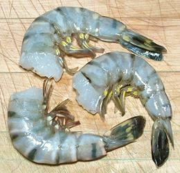 [Penaeus monodon]
These are recognizable by the stripes on their shell segments. They are
the second most farmed shrimp, and tend to be larger, and quite a bit
more expensive than white shrimp. They are sold mostly head off, but
sometimes head on. The head-off photo specimens, purchased from a
Philippine market in Los Angeles, were 4.5 inches long and 0.63 inch
diameter at the thick end, and weighed 0.8 ounces each. Flavor is very
slightly different from White Shrimp, though you need to do an AB test
to detect it at all. They are also a little tougher, but not enough to
be any kind of problem.
Giant Tiger Shrimp
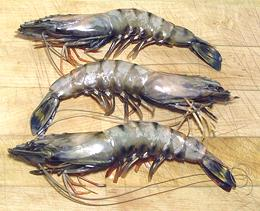 [Penaeus monodon]
These are the same Tiger Shrimp as in the previous paragraph, but
were allowed to grow bigger - but not nearly as big as they can grow.
Females can grow to 12 inches and weigh up to 11 ounces, and males to
10 inches and 6 ounces. The photo specimens were purchased from a Korean
market in Los Angeles. They were typically 8 inches long and weighed
1.9 ounces each. Yield of shelled tail was 0.94 ounces
(51%), and after poaching they yielded 0.75 ounces of cooked shrimp
(41%). Smaller ones would yield a little less. Flavor isn't a lot
different from White Shrimp.
Argentine Red Shrimp
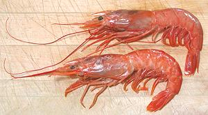 [Langostino Rojo Argentino, Gambón Argentino, Langostino Austral, Gambón Austral; Pleoticus muelleri]
These shrimp are native to the Atlantic coast of South America, from
Rio de Janeiro, Brazil, to Tierra del Fuego and the Falkland Islands.
They can grow to over 8 inches long (head-on) but are more commonly 4
inches. The head-on photo specimens were up to 8 inches long and
weighed about 1 ounce each. They are red because they lack the coating
of gray-green protein many other shrimp have.
Details and Cooking.
Giant Red Shrimp
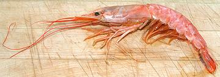 [Aristaeomorpha foliacea]
These are deep water shrimp, little known until recently - and yes,
they are this red before cooking. They are found worldwide from the
tropics to near the arctic, at depths between 820 and 2450 feet.
They can grow to almost 8-7/8 inches measured from the tip of the
rostrum (the toothy spikes at the top of the head extending over the
eyes) to the tip of the tail. The average is about 5-1/2 inches. The
photo specimen was just short of 8 inches.
Details and Cooking.
Ridgeback Shrimp / Prawn
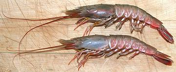 [Pacific rock shrimp; Camarón de piedra del Pacífico, Cacahuete (Spanish); Sicyonia ingentis of family Sicyoniidae]
These shrimp are native to the coast of California and Baja California,
from Monerey Bay as far south as the Isla María Madre, well off
the southern tip of Baja, and in the Gulf of California between Baja and
the mainland. They are characterized by a hard ridge down the back of
their body and very hard, strong shells. They have long been caught in
trawls for rock fish, and were discarded because they were hard to shell,
but they now have a good market due to their excellent flavor. They are,
however, still a problem shrimp because they decay so rapidly once dead,
so they need to be kept alive.
Details and Cooking.
Giant River Prawns
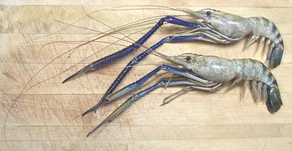 [Giant Freshwater Prawn, Malaysian Prawn, Freshwater Scampi; Golda Chingdi, Cherabin (West Bengal); Macrobrachium rosenbergii]
These shrimp spend their larval period in brackish water and then move
to fresh water for the rest of their lives. They are native to the rivers
of the Indo Pacific region, particularly from West Bengal through
Indonesia and northern Australia. These can be found in Asian markets
here in Los Angeles, but not always. They are noted for their blue color,
especially on their very long clawed forelimbs. Shrimp farmers break
off the swinging side of the claws to keep them from tearing each
other apart. These shrimp can grow to a length of 12 inches (not
counting the long arms) and are both fished wild and farmed.
Details and Cooking.
Mantis Shrimp
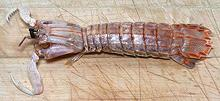 These assassins of the coastline are not Shrimp, but people may look for them here, so, see our Mantis Shrimp page.
Paddy Shrimp
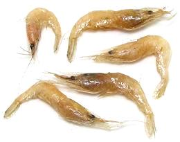 There has recently been a resurgence of interest in multi-cropping rice paddies with shrimp, and using shrimp ponds in conjunction with rice paddies. Some operations now grow large shrimp, but traditionally very small shrimp have been harvested. These are popular in Southeast Asia, particularly Cambodia and Thailand. The photo specimens were about 1-5/8 inches long.
These shrimp are usually used whole. They are often mixed into a rice
flour batter and deep fried to make snack pancakes. These are eaten with
salt, pepper and lime juice, or various dips. Paddy shrimp are also stir
fried, perhaps with lemon grass, chilis and scallions. They occasionally
appear in foam trays or bags in the frozen food cases of the Asian markets
here in Los Angeles.
Krill
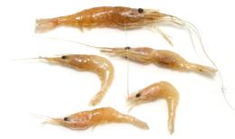 [Okiami (Japan); Alamang (Philippine); order Euphausiacea]
Krill are found in the seas worldwide, and are extremely important to oceanic food chains. They can be told from other shrimp by having external gills, right behind the main legs. The vast majority are less than 7/8 inch in length, though a few species can reach almost 6 inches. The Antarctic Krill (Euphausia superba) makes up a biomass of 379,000,000 metric tons.
The annual catch is currently less than 200,000 metric tons. Most is used for feed in aquaculture and aquariums. Some is eaten by humans, particularly in the Philippines, where it is salted and digested into bagóng alamáng, the shrimp paste of the region. It also has a long history of being used as food in Japan. Some of the harvest is processed into krill oil, which alarmists are selling at a good price to replace fish oil as an Omega 3 supplement, claiming fish oil may contain dangerous mercury.
Given its considerable nutrition and large biomass, do-gooders are
proposing a massive increase the krill harvest to feed the world's
growing population. This would, of course, just encourage the world's
population to grow even faster, until the krill harvest ran out. Most
of the world's population accepts no means of birth control except
starvation. Ecologists are against this because the entire Antarctic
ecology is based on krill, and it would mean extinction for penguins,
seals, blue whales, and destruction of the regions fisheries. Half the
379 million metric tons of Antarctic krill is eaten by sea animals
every year, and the rest is needed to replenish the supply.
Tadpole Shrimp
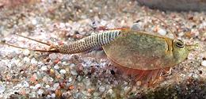 [class Branchiopoda order Notostraca]
These crustaceans are not really shrimp, being in class
Branchiopoda rather than Malacostraca, but they are
called "shrimp" just the same. They have been around for about 300
million years. They are not eaten by people, but can be important for
weed control in rice paddies. Their eggs can stand being dry for up to
20 years, so when the paddy is flooded, many eggs hatch. In a
transplanted paddy the rice plants are too big for tadpole shrimp to
eat, but weeds, which sprout after the rice is transplanted, are small
enough and eaten by them. They are also helpful in that they hunt
down and eat mosquito larva. These shrimp can grow to a body length of
3 inches, and have a lifespan of about 90 days. They are often kept as
aquarium pets.
photo © Dominik Tomaszewski, all usages permitted
.
Shrimp Products
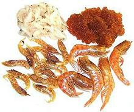 Shrimp are plentiful in the seas, and easy to process, so there are many products made from shrimp. Each country has its own versions and its own ways of using them, so it's important match the right types to regional cuisines,
Dried Shrimp:
These are found in Asian, Mexican, Central and South American markets for use in soups and sauces. They have some salt so some recipes ask you to rinse them. I don't - I just toss them in the spice grinder and grind them to powder. The photo above shows two common sizes, the largest one about 1-1/2 inch long. Even larger ones are common in Latin American markets, the smaller ones in Asian markets. For details see our Dried Shrimp page.Shrimp Paste:
These important flavorings are made from tiny shrimp, digested with salt, aged in various ways and ground up (top right in photo). They may be mixed with oil or other ingredients, and are used in soups, sauces and curry pastes. They're a Southeast Asian essential, available in Asian markets. For details see our Shrimp Sauce / Paste page.Salted Shrimp:
[Saeujeot (Korea)] Salted tiny shrimp used in soups and other dishes in China and Korea (top left in the photo). They are available in jars in the refrigerated section of Korean markets, but these little buggers have so much salt I can't believe refrigeration is needed (and one of my Korean cookbooks says "keeps unrefrigerated for 1 year"). For details see our Shrimp Sauce / Paste page.Health & Nutrition
Shrimp, unlike some large fish, are low enough in the food chain they don't concentrate mercury, though that has pretty much proven to be a non-problem with most fish (U. Rochester / Seychelles study). Shrimp are high in protein, low in fat, with an excellent balance between omega-3 and omega-6 fats. They have a good mineral content (iron, phosphorus, potassium and zinc) as well as being good sources of vitamin B-6, B-12, biotin, niacin and carotenoid antioxidants. For complete details see Note-S2
Some years ago, the AHA (American Heart Association) ran a big scare campaign warning people not to eat shrimp or eggs because they were "high in cholesterol". As with most of their campaigns, they were wrong. Today it is well known that dietary cholesterol has very little effect on blood cholesterol for most people. If some dietary cholesterol is absorbed, the body compensates by manufacturing a little less internally. Cholesterol is very important, as much of your brain is made out of it, as well as your cell membranes. In any case, shrimp have been shown to have a beneficial effect on the HDL / LDL cholesterol balance. Besides, the whole cholesterol / heart disease theory seems to be collapsing now. The real culprit appears to be the trans fats and highly processed polyunsaturated seed oil fats the AHA spent over 75 years urging us to use as a "healthier alternative" to natural fats.
Links
- S2 - Health characteristics - The World's Healthiest Foods.
- S3 - Shrimp Farming - Shrimp News International.